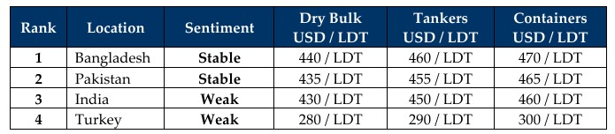

inWeekly Demolition Reports17/03/2025

After what has certainly been a hectic January of negotiations and a late February / early March of unending deliveries with nearly200K of LDT delivered in recent weeks, a period of calm reflection descended across Indian sub-continent ship recycling markets with an alarmingly minimal number of deals being fixed over recent weeks including this one. And ever since prices have been at and even well under the now chased after USD 450s/LDT across the board (as confirmed via last week’s logger sale into Bangladesh), barely any sales have even been rumored to take place. Speaking of, Bangladesh remains ahead of its regional competitors with (weakening) levels still emanating from India and an inadvertently more competitive / stable Pakistan not far behind, snapping on their heels for the slim picking of units available. And this has once again presented itself via a severely dithered Alang anchorage and Pakistan’s 2nd delivery in 3 months this year.
It has been a number of weeks since we saw more than one market unit concluded into the sub-continent ship recycling markets as the Baltic’s Dry Bulk Sea Freight Index reported further climbs and registered its highest levels since November 2024, further deviating dry bulk & container freight sectors away from the bidding tables as firming rates push on and are maintaining the backlog of vintage / over aged vessels on the high-seas over the last few years. This will certainly drive global inflation up as logistics gets more expensive and trade wars aggravate an already volatile situation that much worse. Even oil prices continue to see jitters after they declined another 1% in early-week trading and rose back 0.9% by Friday, as oil closed the week out at $67.20 / Ton, all in the face of an ongoing over-supply of oil from OPEC+ countries despite a global easing of energy demands.
On the domestic fundamentals front, there has been a mixed bag of confusing signals emanating from the recycling markets. On the one hand, the U.S. Dollar has suffered a stuttering time as it weakened against some currencies while strengthening against others, and local steel plate prices hammer sentiments down further in both India and Pakistan this week, all while Chinese plate prices finally firm after a long time, which could have a positive affect on sub-continent markets in the long run and sub-continent levels continue to decline as an equilibrium finally settles things down…but that still remains an “if and when” type of situation.
For now, the ongoing downtime via the lack of availability of tonnage is providing recyclers in both Bangladesh and Pakistan the perfect opportunity to upgrade their yards up to HKC standards ahead of its entry into force on June 26th, while a majority (if not all) Alang yards are already HKC accredited with SoC certifications. Turkey at the far end has receded into hibernation in the face of the ongoing lack of tonnage, other than a marginal private proposal this week. Finally, many of Trump’s tariff deadlines have now passed and it will be interesting to see how economies fare now that China too is reacting in kinds. Finally, a number of larger LDT OFAC listed / sanctioned vessels also remain unsold in cash buyer hands amidst fresh sanctions being imposed on vessels currently idling outside Bangladesh, highlighting once again the risks some cash buyers are willing to take and the international laws they are willing to violate, just to make a quick buck!
For Week 11 of 2025, GMS Market Rankings / vessel indications are as below.

📄 Download PDF: Ship-recycling-market-insight-Week-11-03-14-2025-Spluring_End.pdfSource: GMS,Inc.https://www.gmsinc.net/gms_new/index.php/web